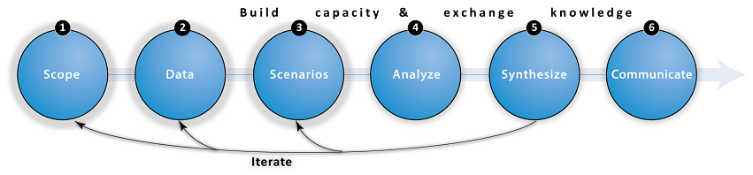

Marine Spatial Planning Concierge
Marine spatial planning can be a complex and challenging process. There are several proposed frameworks (Kittinger et al. 2014, Cornu et al. 2014, Beck et al. 2009, Ehler & Douvere 2009), many of which suggest incorporating ecosystem services and risk to habitats as elements of planning (Arkema et al. 2014, Koehn et al. 2013). Technical tools can be useful, but there is confusion over what they do and how they can be linked.
This website was designed to help answer frequently asked questions about MSP, including:
Which organizations have done MSP and where?
How does one find and compile spatial data? (Data, step 2)
When are Scenarios (step 3) useful in this process?
There are many available decision-support tools (Analyze, step 4). How do I make sense of them all?
Many tools require specialized expertise to apply such as data pre-/post-processing. Where can I get help?
How can I effectively summarize technical information (Synthesize & Communicate, steps 5-6)
Where should I go for assistance when something goes wrong?
What are MSP and ecosystem services?
Marine spatial planning (MSP) is a tool for minimizing conflicts among users and reducing impacts on ecosystems. Increasing demands on ocean space for diverse uses, including tourism, recreation, fishing, shipping, national security, oil and gas exploration and renewable energy (wind and wave), have led to more conflicts among users as well as additional impacts on already stressed ocean ecosystems (Lubchenco and Petes 2010, Douvere 2008, United Nations Environment Programme 2006).
For more information about the relationships between impacts ↔ habitats ↔ benefits, click on the "Human Uses" tab below to rotate the scrolling image.
In this guide we highlight an ecosystem service (ES) approach (Ruckelshaus et al. 2013) which we believe can aid the MSP process. This means that during the planning process the focus is not just on the ecosystem itself, but the flow of benefits from healthy ecosystems to people (called "ecosystem services"). This connection between environmental health and human benefit is not usually recognized or considered in the marketplace. MSP and ecosystem services thinking now covers a myriad ideas, issues and dimensions that describe the uncountable ways that people use and depend on nature. We cannot cover them all here so instead we attempt to narrow the conversation.
Suggested MSP Approach
There are several suggested approaches which converge around these common themes (e.g., Rosenthal et al. 2014) and outline an approach for conducting decision-relevant assessments of ecosystem services. This website adapts an approach designed by Rosenthal and colleagues at the Natural Capital Project to be used in the context of marine spatial planning.

We encourage you to visit the six steps of our suggested approach by clicking the links on the left panel menu or conceptual diagram (above). For each step we provide the following information:
 | Overview | Description of each step |
 | Goals | Intermediate and final products and outcomes from each step |
 | Tips | Helpful advice and lessons learned |
| Databases | Relevant sources of spatial data and project information |
 | Tools | Decision-support and helper tools |
 | FAQ | Answers to frequently asked questions |
 | Links | Suggested reading and online links |
 | Use-Cases | Examples from NatCap case studies around the world |
NatCap MSP Use-Cases
Learning about new MSP use-cases can elucidate methods and tools that may be relevant to your own project. The Natural Capital Project (NatCap) has compiled lessons from six MSP use-cases around the world. At the bottom of each subpage we summarize how each step was accomplished for select use-cases.
top